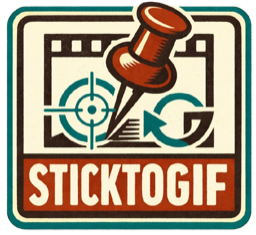
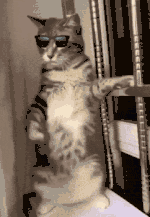
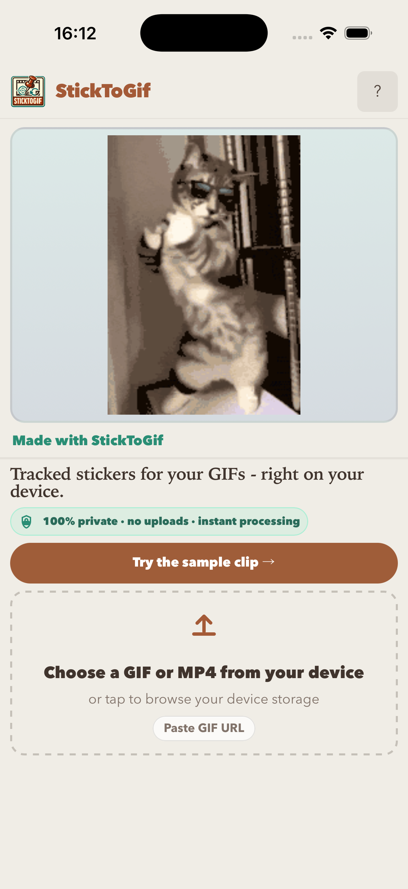
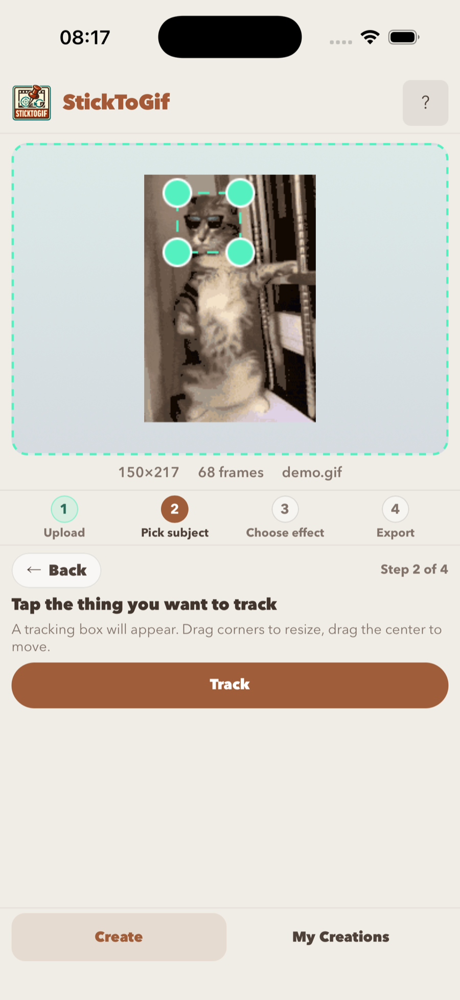
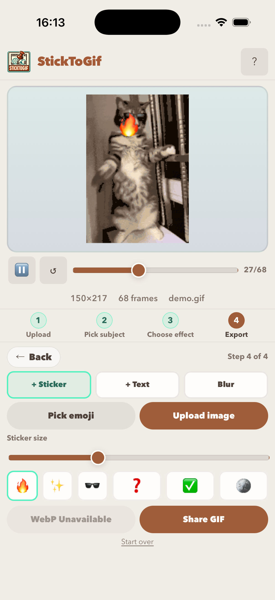
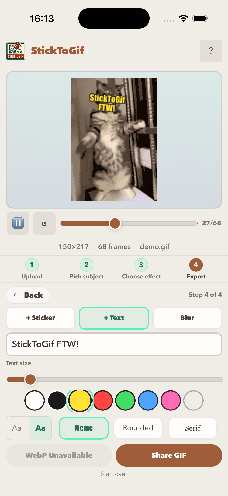
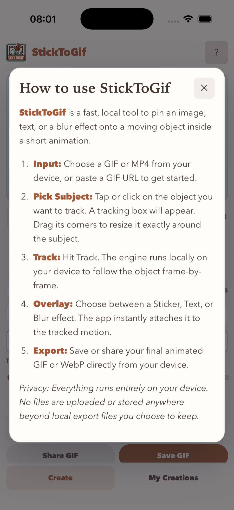

Now on the App Store for iPhone
StickToGif lets you add tracked stickers, moving text overlays, or blur effects to GIFs and short videos in seconds. It runs directly on your device, with no uploads, no account, and no watermark.

Available now
Download the app from the App Store and make tracked GIF edits without sending your media anywhere.
What you can do
StickToGif is built for the moments where a normal GIF editor is too static and a cloud tool is too annoying.
Add an emoji, reaction image, or custom sticker to a moving subject without manual keyframes.
Create moving captions, labels, or jokes that stay attached to a person, object, or animal.
Track sensitive details in a GIF or short video and keep the blur locked on as things move.
Import MP4 or MOV clips, track the subject, and turn the result into a shareable GIF.
Useful for private clips, inside jokes, and quick edits you do not want to send to a server.
Everything runs locally, so your media stays on your device from tracking to export.
How it works
Real computer vision under the hood, but the workflow stays simple.





Pick the person, object, or detail you want to follow. No timeline work, no manual frame-by-frame editing.
Make memes where the reaction follows the action instead of floating awkwardly over the whole clip.
Hide a face, screen, plate, or sensitive detail while it moves through the shot.
Add a moving text overlay that follows the subject, which works especially well for jokes and labels.
The tracking runs on-device, so private media stays private and small edits stay fast.
Export the result as a GIF and send it where you want without a watermark or account wall.
Real examples
The point is not just tracking for its own sake. It is getting to a GIF that feels finished, funny, readable, or safe to share.
Turn a short reaction clip into something that actually lands because the sticker stays with the subject.
Add labels, punchlines, or commentary directly on the motion instead of placing static text above it.
Hide faces, screens, or other details in motion with a blur that stays attached as the scene moves.
Why it feels different
Most alternatives either want your upload, your subscription, or your patience. StickToGif is meant to get in, do the job, and get out of the way.
StickToGif uses actual tracking, not fake motion presets. Tap what you want to follow and the app keeps your sticker, text, or blur attached to it.
No cloud rendering, no upload queue, no media leaving your device during processing. That is the whole point.
If you want to make one tracked meme, blur a moving face, or label a clip, you should be able to do it without signing up or paying a monthly fee.
Under the hood
For people who care how it works, StickToGif uses WebAssembly, Web Workers, and optical flow tracking to process frames locally on your device.
That means you get a private GIF editor with real tracking instead of a basic sticker tool. The media stays local, the tracking happens in-memory, and the output is ready to save or share when you are done.
FAQ
Yes. No subscription, no paid export tier, no watermark, no account wall. The goal is a useful tool you can actually keep around.
The tracking runs locally on your device using WebAssembly and background workers. Your media is not uploaded to a remote server for processing.
You can import animated GIFs, MP4s, and MOVs from iPhone. StickToGif is built for short clips and exports shareable GIFs.
People, pets, faces, objects, screens, license plates, and other visible subjects that stay readable across frames. It works best on short clips with clear motion and decent contrast.
Yes. You can upload your own image as a sticker, use the built-in emoji presets, add moving text, or apply blur instead.